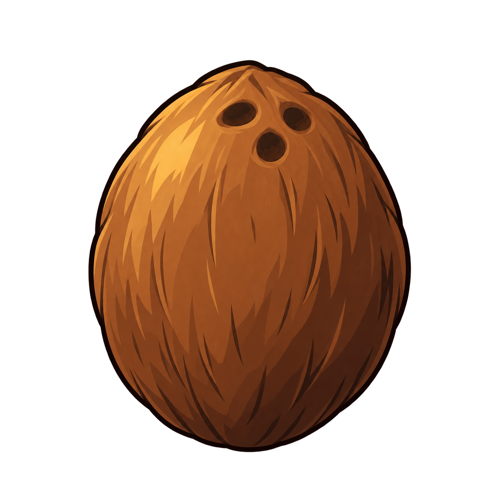
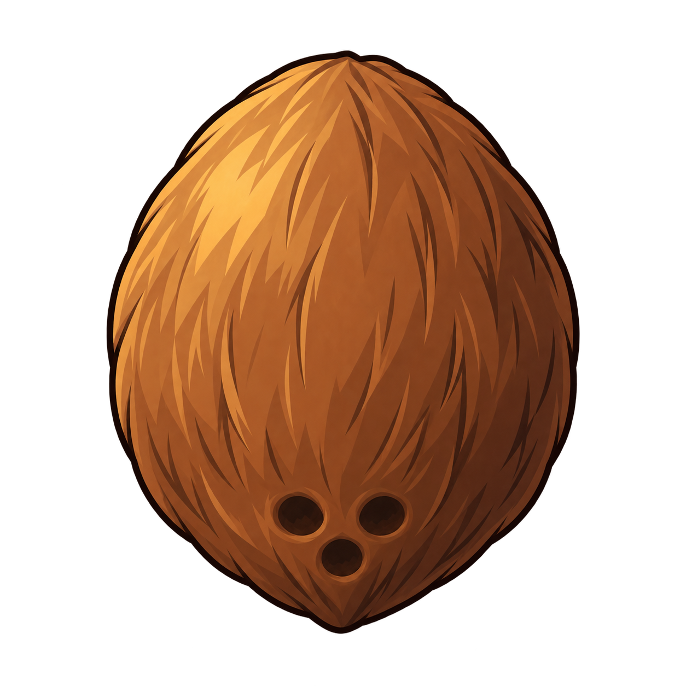
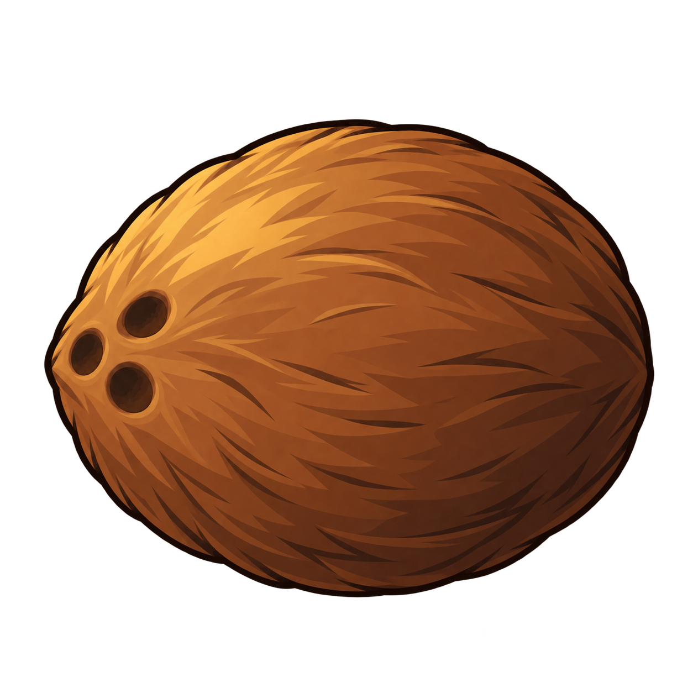
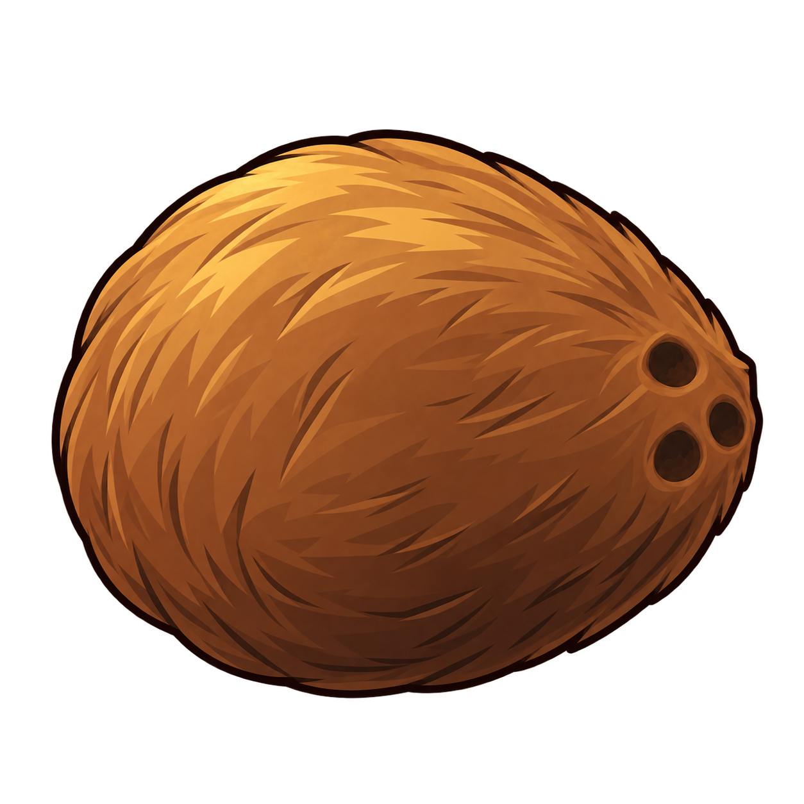
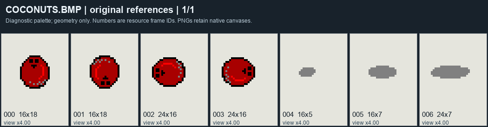
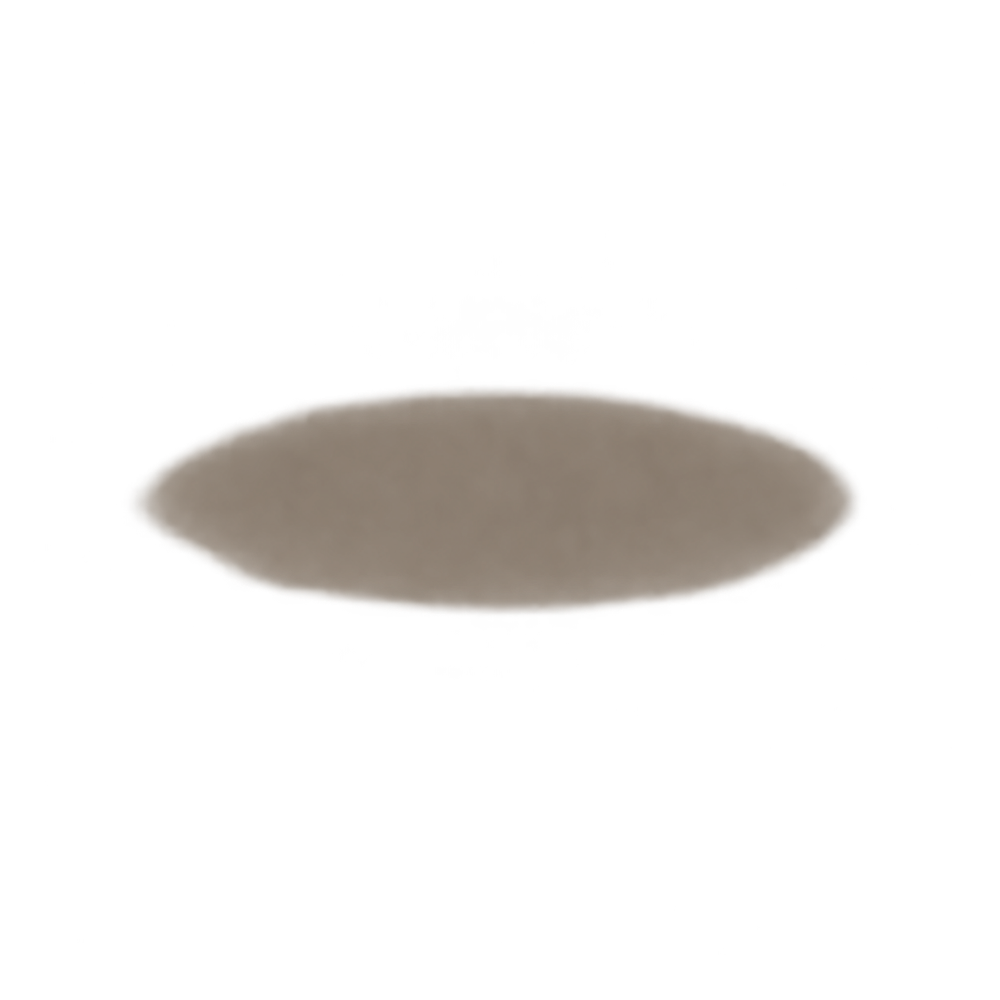
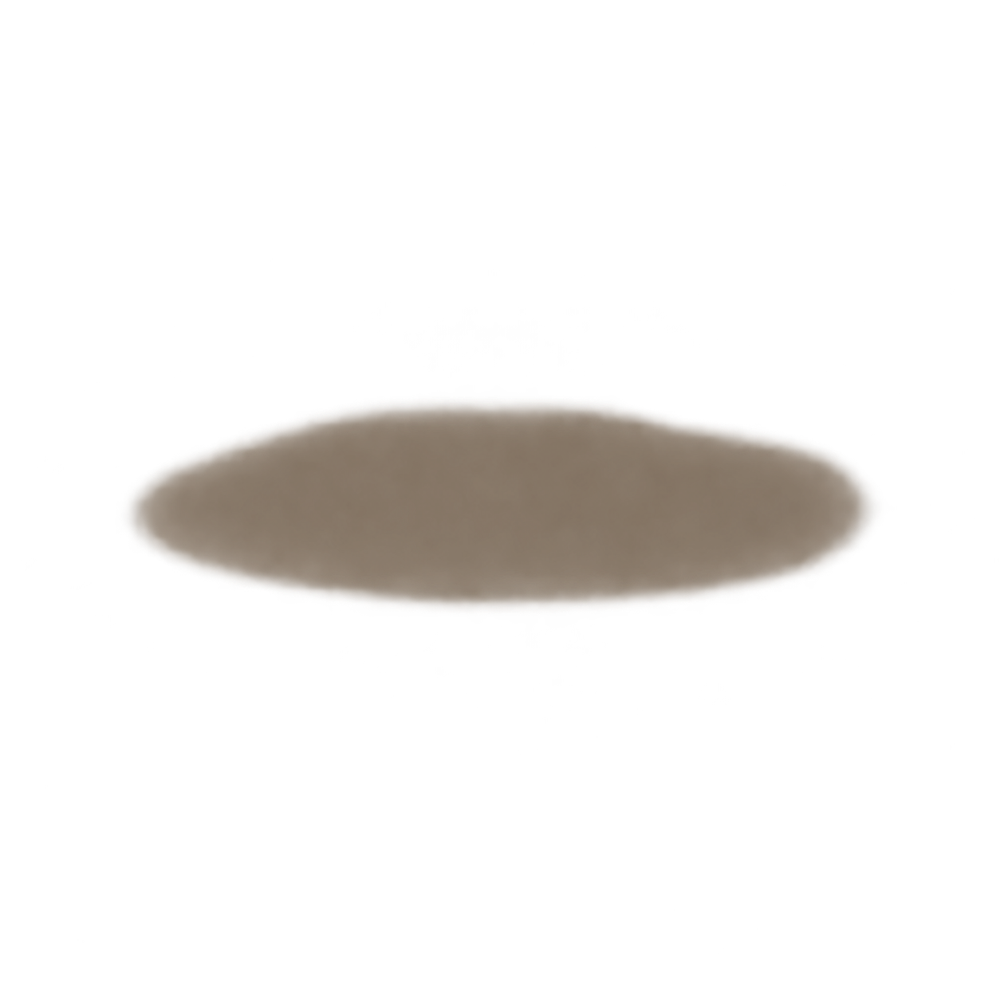
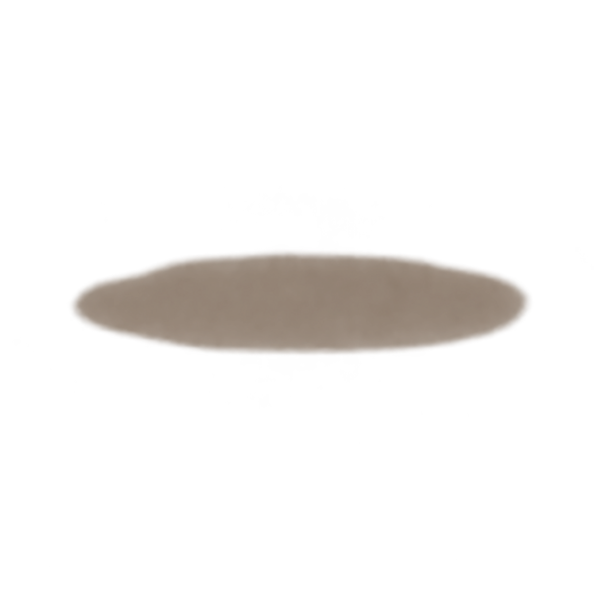

Johnny's coconut family
Compare the shape, brown material and pore placement across the four views. The brown coconuts already on the approved palm are the style reference.




Show the original coconut family

The diagnostic red colors guide shape and orientation only. They are not the target coconut color.Show the approved palm for color and style
Show the three separate shadow drafts
The three cast shadows remain separate from the coconut drawings.



Draft visual review of the complete raw images. Native placement and motion have not been reviewed for these drafts.